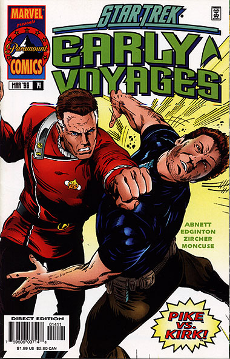
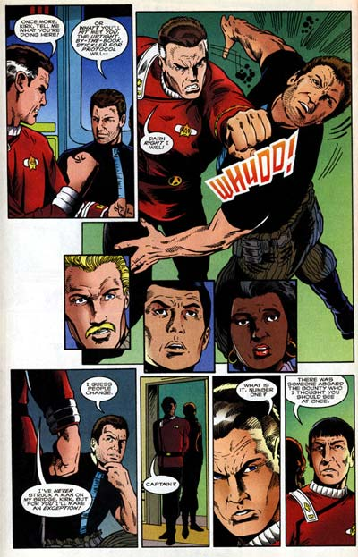

|


|
Gnese
| Episdios I Reflexes
| Palavras do autor | Palavras
do artista Star Trek
Early Voyages, n 14 maro de 1998  Histria: Dan Abnett e Ian Edginton Material produzido por Salvador Nogueira para o Trek Brasilis
Data Estelar: 9521.9 Sinopse: A Enterprise (NCC-1701-A) recebe a bordo os tripulantes do cargueiro de Kirk. Na ponte, Pike intima o capito a revelar suas motivaes ao violar o espao Klingon, mas Kirk se mostra irnico, o que leva Pike a perder o controle e dar um soco em seu velho algoz. Logo em seguida, Spock traz para a ponte a ordenana Colt, para a surpresa de todos --principalmente de Tyler, que est ainda servindo como navegador de Pike. O capito envia Colt enfermaria, para se certificar de que tudo est bem. Enquanto isso, ele obrigado a ouvir a histria de Kirk. O capito do cargueiro revela que estava tentando levar Colt de volta a Algol, para que ela, de algum modo, pudesse retornar a sua prpria poca. Ele convoca uma reunio com todos os oficiais, e a situao exposta. Spock e Saavik descobriram que Colt est sendo rejeitada por essa poca, por no pertencer a este perodo. A mdica-chefe Carlotti diz que a ordenana no poder sobreviver mais de quatro dias. Em razo disso, Pike decide seguir com os planos de Kirk, apesar dos riscos, e devolv-la a seu lugar de origem. Saavik aponta os danos que a volta de Colt poderia causar ao continuum espao-tempo, mas Spock diz que na verdade sua ausncia pode ter alterado o que deveria ser. Com base na argumentao de Spock, Pike consegue convencer a todos do que precisa ser feito. Enquanto isso, a Frota Estelar ordena o regresso imediato da Enterprise. Quando Pike se recusa a responder, o Alto Comando envia a Excelsior, sob o comando da ex-Nmero Um de Pike, para interceptar, e se for o caso, combata a Enterprise, para evitar que a frgil paz com os Klingons seja afetada. Na Enterprise, Colt conversa com Tyler, que ainda est abalado pelo seu desaparecimento h dcadas, enquanto Scotty tem a chance de ganhar um tour pela engenharia da nave. Apesar de no se intimidar pelas ordens da Frota, Pike obrigado a interromper a viagem para Algol quando interceptado por trs naves Klingons, comandadas pelo general Chang. A batalha parece inevitvel, e o poder de fogo inimigo superior. Chang quer vingana. Continua...  Comentrios A histria a mesma, mas muda de nome novamente. De "Futures, Part I", para "Future Tense, Part II", e agora "Futures", parece que Abnett e Edginton no conseguiam mesmo se decidir sobre como chamar essa que foi a maior saga serial de Early Voyages. A aventura continua toda, e a interao entre Kirk e Pike tem um sabor especial. O confronto dos dois na ponte vibrante, e a arte fiel de Zircher somada aos dilogos bem escritos da dupla Abnett e Edginton fazem a cena toda extremamente verossmil. divertido demais ver o bom e velho Kirk (embora em uma realidade alternativa) fazer o cisudo Pike subir nas tamancas. Em termos de trabalho com os personagens, a histria segue implacavelmente bem feita, mas agora temos a introduo de um elemento sci-fi pouco convincente --a "rejeio" de Colt pelo continuum do futuro. Levando em conta que viagem ao futuro um conceito vlido e realista at para nossa tecnologia e conhecimento atuais, imaginar que esse tipo de "rejeio" fosse possvel est um pouco alm da capacidade de suspenso da descrena mdia de um f de Jornada. Trata-se de uma das poucas convenincias de roteiro introduzidas pela dupla de escritores em toda a srie, e algo que certamente eles poderiam ter trabalhado melhor, no fosse a presso de tempo para concluir as histrias e t-las executadas pelos artistas. At o prprio Spock, dando uma de Guinan em "Yesterday's Enterprise", diz que tem convico de que Colt precisa ser devolvida a seu tempo, mas que sua argumentao racional para isso deixa muito a desejar. Ele no se refere especificamente ao aspecto da "rejeio", e sim s implicaes ao presente pela devoluo da ordenana, mas seria at uma sada interessante se ele tivesse falseado ou maquiado certas concluses a respeito disso tambm para perseguir sua "convico". A falta de uma argumentao mais convincente para a devoluo de Colt, colocando em risco a paz com os Klingons, aparece em um momento especialmente delicado da histria, em que a nostalgia j est bem estabelecida (o que faz com que ela no sirva mais de motivao para o leitor) e agora o que o pblico quer mesmo um bom enredo. De toda forma, ele no anula todo o esforo em seguir com essa grande saga. Muito ao contrrio, s ver a Nmero Um no comando da Excelsior, ordenada a perseguir Pike e a Enterprise, j compensa por todo e qualquer inconveniente dessa falha de roteiro. Como nota de rodap, um pequeno erro dos roteiristas surge quando Pike menciona o desaparecimento de Colt como tendo ocorrido em 2263. impossvel que ele tenha acontecido nesta ocasio, uma vez que Early Voyages claramente uma srie sequencial que comeou no ano 2254. mais fcil considerar a fala de Pike como um "blooper" do que tentar interpretar a informao e encaix-la na cronologia da srie. Ao final da histria, s resta ao pblico agonizar mais 30 dias at a prxima edio, onde finalmente descobriremos como Pike se livrou dos Klingons e da Excelsior de sua ex-primeiro-oficial... no preciso ser gnio para concluir que o final ser explosivo.
|